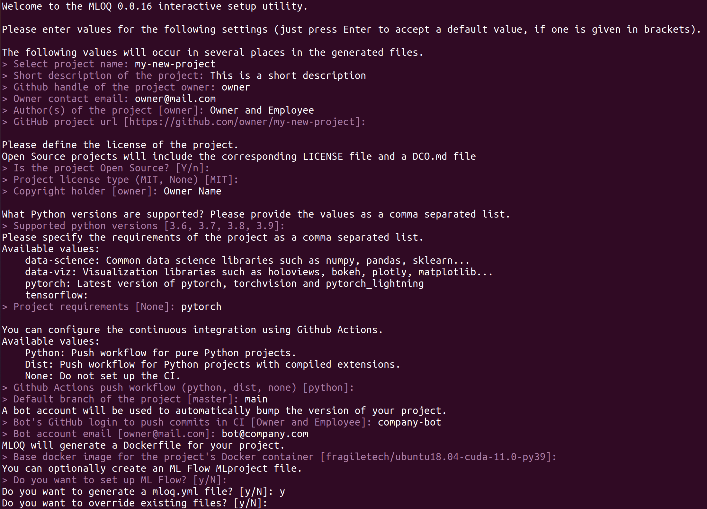

Command line interface
Contents
Command line interface#
Options:
--file-f: Name of the configuration file. Iffileis a directory, it will load themloq.ymlfile present in it.--overwrite-o: Rewrite files that already exist in the target project.--interactive-i: Missing configuration data can be defined interactively from the CLI.
Usage examples#
Arguments:
OUTPUT_DIRECTORY: Path to the target project.
To set up a new repository from scratch interactively in the current working directory:
mloq setup -i .
To load a mloq.yml configuration file from the current repository, and initialize the directory example, and
overwrite all existing files with no interactivity:
mloq setup -f . -o example

mloq.yml config file#
This yaml file contains all the information used by mloq to set up a new project. All values are strings except python_versions and requirements, which are lists of strings. null values are interpreted as missing values.
# This yaml file contains all the information used by mloq to set up a new project.
# All values in template are strings and booleans,
# except "python_versions" and "requirements" that are lists of strings.
# "null" values are interpreted as non-defined values.
# ------------------------------------------------------------------------------
# project_config values are necessary to define the files that will be written, and the tools
# that will be configured.
project_config:
open_source: null # boolean. If True, set up and Open Source project
docker: null # boolean If True, set up a Docker image for the project
ci: null # Name of the GitHub Actions CI workflow that will be configured.
mlflow: null # boolean. If True configure a MLproject file compatible with ML Flow projects.
requirements: null # List containing the pre-defined requirements of the project.
# template contains all the values that will be written in the generated files.
# They are loaded as a dictionary and passed to jinja2 to fill in the templates.
template:
project_name: null # Name of the new Python project
default_branch: null # Name of the default branch. Used in the CI push workflow.
owner: null # Github handle of the project owner
author: null # Person(s) or entity listed as the project author in setup.py
email: null # Owner contact email
copyright_holder: null # Owner of the project copyright.
project_url: null # Project download url. Defaults to https://github.com/{owner}/{project_name}
bot_name: null # GitHub login of the account used to push when bumping the project version
bot_email: null # Bot account email
license: null # Currently only proprietary and MIT license is supported
description: null # Short description of the project
python_versions: null # Supported Python versions
docker_image: null # Your project Docker container will inherit from this image.